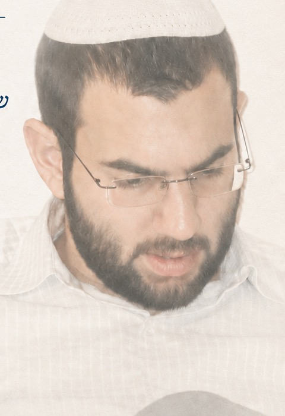

מיומנו
של בחור ישיבה
יונתן (יוני) מנדל תורג'מן ז"ל
כ"ג אייר תשנ"ב – כ"ח אב תשע"ג

צריך כל הזמן שאיפה להתקדמות, אבל לא ליפול בגלל זה, לא להתחסד יותר מדי, אבל אין סטטי. גם מה שסטטי זה בעצם העמקה של השלב הקיים, זה גם התקדמות, למרות שאין איזה שינוי חיצוני, ויתכן אפילו שזה עיקר ההתקדמות. מתוך היומן
בן 21, מרחובות
יוני, יונתן מנדל תורג'מן ז"ל, גדל ברחובות. היה מדריך וקומונר בסניף אריאל, התנדב במד"א, במעייני הישועה, בקייטנות התנדבותיות ועוד. לאחר לימודי התיכון בישיבת הדרום ברחובות עבר למצפה רמון, שם למד בישיבת ההסדר.
משפחתו, חבריו וחניכיו כולם אהבוהו והוא התחבב על כל מכיריו. היה שקדן, חברותי ומסור. יוני נהרג בתאונת דרכים בכ"ח באב תשע"ג, בגיל עשרים ואחת, בשנות לימודו בישיבת ההסדר במצפה רמון.
"דבריהן הן הן זכרונן"
במהלך השבעה הגיעו אלינו ארגזים של כתבי יד — סיכומי שיעורים, רעיונות, אפילו שירים שחיבר. את סיכומיו על שיעורי הרב אורי שרקי למסילת ישרים הוצאנו יחד עם הרב שרקי כספר.
בין הכתבים מצאנו גם יומן קטן — קטן בכמותו וגדול באיכותו. בדפים האלה יוני מדבר עם עצמו — על שאיפותיו, על השתדלויותיו ועל התמודדויותיו. ככל שקראנו בו התברר לנו שהיומן כולו הוא יישום של ספר מסילת ישרים בחייו, ולכן צירפנו חלקים ממנו כנספח לספר, תוך ציון ההקשר של כל קטע למסילת ישרים.
הרב ברוך וידר, ראש ישיבת הכותל, ראה את הנספח ושמח בו מאוד. מניסיונו כראש ישיבה סיפר על הערך המיוחד שיש דווקא בדברים שאדם כותב לעצמו, ועל ההזדהות שהם עשויים לעורר בבחורים העוברים התמודדויות דומות. הוא עודד אותנו להוציא את הנספח כחוברת עצמאית, ואנו אסירי תודה לו על העידוד ועל הזירוז.
לצד היומן צירפנו קווים לדמותו, כמה מן ההקדשות האישיות שכתב לחניכיו, ומאמר משלו.
יהי רצון שיהיו הדברים לעזר לקוראיהם — ודבריו הן הן זכרונו.
משפחת תורג'מן
מתוך היומן
היומן האישי של יוני, מסודר לפי מידות מסילת ישרים — מהכרת חובתו בעולמו ועד הדביקות.
קווים לדמותו
סיפורים וזיכרונות מחברים, מחניכים ומהמשפחה.
הקדשות לחניכים
לכל חניך — מסילת ישרים עם הקדשה אחרת, בכתב ידו.
מאמר משלו
"אשר יעשה אותם האדם וחי בהם" — על מהות החיות של האדם.
מכתב ברכה
מן השמים גלגלו שזכיתי לראות את יומנו של הקדוש יוני תורג'מן. הדברים שכתב לעצמו ביומנו יכולים לשמש לדורנו כלימוד עצום לבחור מתחיל בעולם התורה הציוני, שמתמודד עם נסיונות רבים. אני רואה בדברים שלו כעין "מסילת ישרים" בדרך העולה בית ה'.
הצעתי למשפחה להוציא את הדברים לאור ואני משוכנע שהם ישמשו כמגדלור מאיר, כפרוז'קטור לעלייה רוחנית מתוך התמודדויות של בן דור הגאולה.
מברך אני את המשפחה שדבריו יאירו לדור, והוא יהיה מליץ יושר למשפחתו היקרה ולכל דור הגאולה.
בברכת התורה
הרב ברוך וידר
ראש ישיבת הכותל
"אין עושין נפשות לצדיקים, דבריהן הן הן זכרונן"
(ירושלמי שקלים פ"ב ה"ה)